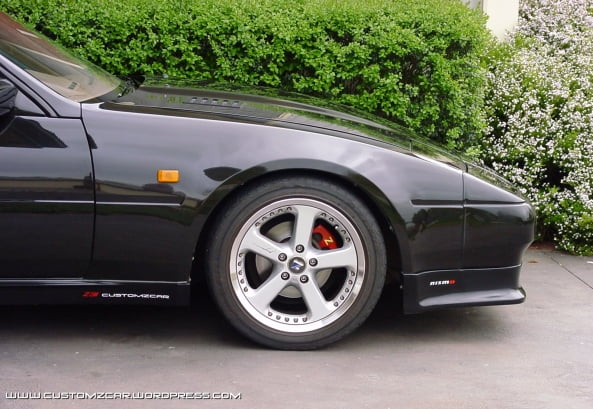

-
Ok, I have a gary molitor tbo lip. I noticed SO many of the tbo lips setting lower than the rest of the car.... So I set out to raise the tbo lip to attempt to offset this. I have the whole lip raised approx 1" over where the lip meets the other lip. This is going to decrease the size of my radiator opening, and also require me to redo my liquid intercooler heat exchanger setup as a result (I modified the factory front bumper to allow the heat exchanger to be directly against the front bumper, as in removed all the inward lip to allow this).
I'm wondering if anyone has done anything like this in the past? -
post some pics86na2t + holset
feedback
viewtopic.php?f=18&t=6114&hilit=andrew+gardner -
No mounted pics yet. Too cold to drive my car to do the work...... -
But why? It's not like it sits that much lower than the rest of the car. It is an air dam after all.

You should paint your stock sideskirts body colored so it makes the rest of the car seem lower to match the painted lip. -
You should have went with an SS lip. Not trying to be a dick about the comment but that is the difference between the two.
I agree with you though, the car needs lower skirts to better tie in the TBO.86na - BlueZ
Shiro #366 - Kouki Monster
85t - Mr Tickles -
Well, I like the idea of larger area (both limit air under car, and the resulting smaller radiato inlet). I was going to go with the ss lip, But picked this up in the where are the lips going to come from shortage, before the z store picked them up. I also got a decent price on it, and itsa gary original. Car is also a not show car, if it don't function chuck it setup. Which is exactly why I grabbed this. Also ss wouldn't choke the radiator inlet like this one will (using that to my advantage). The only time I get into the pedal is at speed, in town cruising is slow(due in part to 4" straight pipe). This is also a route I though of doing a long time ago, but never put it into action.... But either way, this is where I am at. Just showing what I decided to do since I always thought the tbo lip looked funky low, and also all aspects of the function are planned into the setup, so as is the case for me 99.9% of the time function over form! -
so the SS lip is the same as the TBO lip, but the SS lip doesn't hang lower than the sides skirts?
I always thought the TBO lip was a little weird lookin' -
As far as I know, yes. Aside from the lower "brow?" being wider, making it lower. -
This. No need to butcher a good tbo lip. You probably can trade someone's SS lip for that.adamvann3;315971 wrote: You should have went with an SS lip. Not trying to be a dick about the comment but that is the difference between the two.
Also, the black Z I posted above has stock sideskirts and I still don't get what everyone's talking about that looks "funky" -
http://www.garymolitor.com/300zx/ss_…spoilerref.htmCareless;315999 wrote: so the SS lip is the same as the TBO lip, but the SS lip doesn't hang lower than the sides skirts?
I always thought the TBO lip was a little weird lookin'
stprasinz;316006 wrote: As far as I know, yes. Aside from the lower "brow?" being wider, making it lower. -
I'm not butchering the lip at all. I am utilizing the functionality of the lip to its fullest, more so than most. If you don't comprehend what, how, and why I am doin this then you just don't know. I can only explain something so many ways before you either don't want to or can't understand what, how, or why. -
Hey ven, is your tbo mounted on the lip edge of the original body? Normaly they line up from top of tbo to tob of skirts. If its mounted higher, thats what I am talking about doing myself. I can't tell from the pictures to be positive. Also I am working on finding the materials for a splitter to help even more -
The tbo lip is mounted normally on that black car. As for "comprehension" it was to my understanding that an "air dam" works best when lower to the ground. What you're saying to do is raise said air damn 1" higher. Yes you're making the radiator inlet smaller which will decrease drag in that area but then you're allowing more air under the car. You also said you'd add a splitter later on, but the splitter if mounted to your setup would be 1" higher than normal. Unless however you're going to make an extension downward of the lip to the splitter to bring the splitter closer to the ground.
So if we're talking science and function over form, please explain how your setup of a raised lip is better than one lower to the ground like depicted below.
-
Car scrapes in the front already, will be lower than a factory (or even lowering springs on most cars) height car with the tbo lip installed. My car had been lowered to the point at one time that if I had the tbo on it, it would be less than 1" off the ground, that didn't last too long, well less than one summer. This car is being driven on the streets, not track only. The splitter will be done before summer, so its not exactly a added on later. I am making modifications to a modification to make it better suit my needs.
And I'll say it again, I am utilizing the functionality of the lip to its fullest, more so than most. If you don't comprehend what, how, and why I am doin this then you just don't know. I can only explain something so many ways before you either don't want to or can't understand what, how, or why.
I can explain till I'm blue in the face, and someone will tell me what I should have done, but this is what I am doing. Instead of implying I am doing something wrong, ask, I'll tell you why I did. -
The high horse is good and all but down here on the ground, you didn't explain as you claim. I said what advantages will this provide over the lip close to the ground. You used the word "advantage" so you were asked to explain it, not to mention expressing great importance of function over form. On top of that saying you use it (the lip) to the fullest moreso than others.stprasinz;316108 wrote:
I can explain till I'm blue in the face, and someone will tell me what I should have done, but this is what I am doing. Instead of implying I am doing something wrong, ask, I'll tell you why I did.
What I gathered is you think the lip looks weird and want to raise it up some, especially since you drive around on the street. Which is fine since it's your car. It's all the function/form, advantage, utilization over others, that was questioned.
I expect the next response will be something along the lines of not wanting to explain because no one will understand. No matter, the cup of care has diminished.

Copyright © 2006–. All rights reserved. Privacy Policy